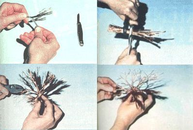

(Clockwise from top left) Before you begin your project, use a pocketknife to remove any insulation from your electrical wires. . . . To create a tiny tree, first stack several ""peeled"" wire sets together, grip the entire cluster with two pairs of pliers, and twist this ""trunk"" by rotating the tools in opposite directions. . . . Next separate the short (root) wire ends into small bundles and twist the groupings. . . . Shape the limbs as you form them ( and be sure you bend the complete branches away from the unformed ones.)